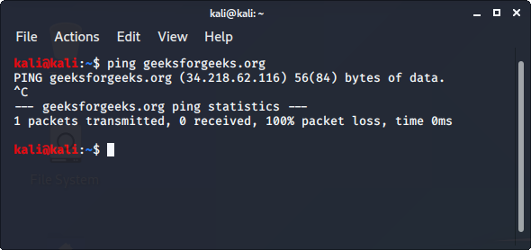
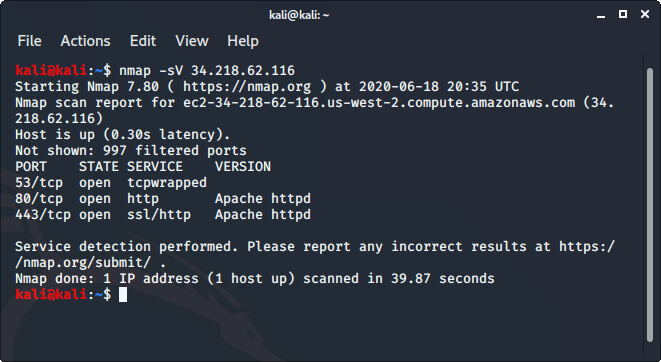

Nmap est un scanner de réseau open-source qui est utilisé pour recon/scanner les réseaux. Il est utilisé pour découvrir les hôtes, les ports et les services ainsi que leurs versions sur un réseau. Il envoie des paquets à l’hôte puis analyse les réponses afin de produire les résultats souhaités. Il pourrait même être utilisé pour la découverte d’hôtes, la détection du système d’exploitation ou la recherche de ports ouverts. C’est l’un des outils de reconnaissance les plus populaires.
ping hostname
nmap -sV ipaddress

